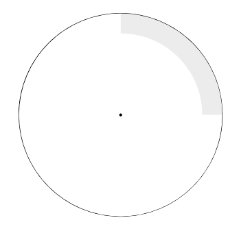
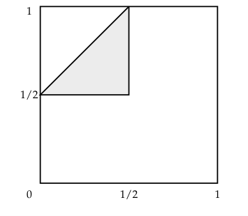

Chapter 2 - Continuous Probability Densities
2.2 Continuous Density Functions
| Main: | Index |
| Previous: | 2.1 Simulation of Continuous Probabilities |
| Next: | 3.1 Permutations |
Results
Definition 2.1
Let $X$ be a continuous real-valued random variable. A density function for $X$ is a real-valued function $f$ which satisfies $$ P(a\leq X\leq b) = \int_a^b f(x)dx $$ for all $a,b\in\R$.
In terms of the density function, if $E\subset\R$, then (assuming it makes sense) $$ P(X\in E) = \int_E f(x)dx. $$ Comment: The density does not measure probabilities, but it does contain all the information about the probabilty.
Definition 2.2
Let $X$ be a continuous real-valued random variable. Then the cumulative distribution function of $X$ is defined by the equation $$ F_X(x) = P(X\leq x). $$
Theorem 2.1
Let $X$ be a continuous real-valued random variable with density function $f(x)$. Then the function defined by $$ F(x) = \int_{-\infty}^x f(t)dt $$ is the cumulative distribution function of $X$. Furthermore, we have $$ \frac{d}{dx}F(x) = f(x). $$
Exercise 1
Suppose you choose at random a real number X from the interval [2, 10].(a) Find the density function f(x) and the probability of an event E for this experiment, where E is a subinterval [a, b] of [2, 10].
(b) From (a), find the probability that X > 5, that 5 < X < 7, and that $X^2 − 12X + 35 > 0$.
Answer
(a)
Each value in [2, 10] is equally likely, so we have a uniform distribution on this interval. Since the integral from 2 to 10 must integrate to 1, and we have a constant distribution, $$ f(x) = \left\{ \begin{matrix} 1/8 & 2\leq x\leq 10 \\ 0 & \text{otherwise} \end{matrix}\right. $$ Checking: $$ \int_2^{10}\frac{1}{8}dx = \bigg[\frac{x}{8}\bigg]_2^{10} = \frac{10}{8} - \frac{2}{8} = 1 $$ In general, for an event $E = [a,b]\subset[2,10]$: $$ P(E) = \int_a^b \frac{1}{8}dx = \bigg[\frac{x}{8}\bigg]_a^{b} = \frac{b}{8} - \frac{a}{8} $$
(b)
Finding different probabilities, First when $X > 5$, which corresponds to $E_1 = [5, 10]$. $$ f(E_1) = \int_5^{10}\frac{1}{8}dx = \bigg[\frac{x}{8}\bigg]_5^{10} = \frac{10}{8} - \frac{5}{8} = \frac{5}{8}. $$ The second event, $E_2 = [5, 7]$. $$ f(E_2) = \int_5^{7}\frac{1}{8}dx = \bigg[\frac{x}{8}\bigg]_5^{7} = \frac{7}{8} - \frac{5}{8} = \frac{1}{4}. $$ For the last event, note that $X^2 - 12X + 35 = (X-7)(X-5)$. This is a second degree polynomial which is equal to 0 when $X=5$ or $X=7$ and negative between them , such as when $X=6$. It follows that this is positive whenever $X < 5$ and $X > 7$, so the event we want to calculate is $A = [2, 5]\cup [7, 10]$. Since these are disjoint we can consider the probability for this event as the sum of two probabilities $A_1$ and $A_2$: $$ P(A_1) = \int_2^5\frac{1}{8}dx = \bigg[\frac{x}{8}\bigg]_2^5 = \frac{5}{8} - \frac{2}{8} = \frac{3}{8} $$ $$ P(A_2) = \int_7^{10}\frac{1}{8}dx = \bigg[\frac{x}{8}\bigg]_7^{10} = \frac{10}{8} - \frac{7}{8} = \frac{3}{8} $$ The sum of these is the event, so: $$ P(A) = P(A_1) + P(A_2) = \frac{6}{8} = \frac{3}{4} $$ We could also have noted that $A = \Omega - E_2$, so we could simply have used $1 - 1/4$.
■
Exercise 2
Suppose you choose a real number X from the interval [2, 10] with a density function of the form $$ f(x) = Cx, $$ where C is a constant.(a) Find C.
(b) Find P(E), where E = [a, b] is a subinterval of [2, 10].
(c) Find P(X > 5), P(X < 7), and P(X2 − 12X + 35 > 0).
Answer
(a)
In the previous exercise, the density was constant in the interval, but that is no longer the case. We need to determine C so the integral over the interval [2, 10] becomes 1. $$ \int_2^{10}Cxdx = C\int_2^{10}xdx = C\left[\frac{x^2}{2}\right]_2^{10} = C\left[\frac{100}{2} - \frac{4}{2}\right] = C\left[50 - 2\right] = C(48), $$ so in order for this to equal 1, then $C = 1/48$. So: $$ f(x) = \frac{x}{48}. $$
(b)
With the PDF, the probability for some event E = [a, b] is just: $$ P(E) = \int_a^b\frac{x}{48}dx = \left[\frac{x^2}{96}\right]_{a}^{b} = \frac{b^2}{96} - \frac{a^2}{96}. $$
(c)
This is almost the same as in Exercise 1. Define $E_1 = [5, 10]$,$E_2 = [7, 10]$ , $E_3 = [5, 7]$ and $A = X^2 - 12X + 35 > 0$. $$ P(E_1) = \int_5^{10}\frac{x}{48}dx = \left[\frac{x^2}{96}\right]_{5}^{10} = \left[\frac{100}{96} - \frac{25}{96}\right] = \frac{75}{96}. $$ Next event, $$ P(E_2) = \int_7^{10}\frac{x}{48}dx = \left[\frac{x^2}{96}\right]_{7}^{10} = \left[\frac{100}{96} - \frac{49}{96}\right] = \frac{51}{96}. $$ As in Exercise 1. $$ P(E_3) = \int_5^{7}\frac{x}{48}dx = \left[\frac{x^2}{96}\right]_{5}^{7} = \left[\frac{49}{96} - \frac{25}{96}\right] = \frac{24}{96} = \frac{1}{4}. $$ And as in Exercise 1. $$ P(A) = 1 - P(E_3) = \frac{3}{4}. $$
■
Exercise 3
Same as Exercise 2, but suppose $$ f(x) = \frac{C}{x} $$Answer
(a)
We must determine $C$ so the integral over [2, 10] becomes 1. $$ C\int_2^{10}\frac{1}{x}dx = C\Big[\log x\Big]_2^{10} = C\left(\log 10 - \log 2\right) = C\left(\log 10/2\right) = C\log 5. $$ In order for this to become 1, $C = 1/\log(5)$.
(b)
With the PDF, the probability for some event E = [a, b] is just: $$ P(E) = \int_a^b\frac{1}{x\log 5}dx = \frac{1}{\log 5}\Big[\log(x)\Big]_{a}^{b} = \frac{1}{\log 5}\left(\log(b) - \log(a)\right) = \frac{\log\left(b/a\right)}{\log 5} $$
(c)
Define $E_1 = [5, 10]$,$E_2 = [7, 10]$ , $E_3 = [5, 7]$ and $A = X^2 - 12X + 35 > 0$. $$ P(E_1) = \int_5^{10}\frac{1}{x\log 5}dx = \frac{\log(10/5)}{\log(5)} = \frac{\log(2)}{\log(5)} $$ $$ P(E_2) = \int_7^{10}\frac{1}{x\log 5}dx = \frac{\log(10/7)}{\log(5)} $$ $$ P(E_3) = \int_5^{7}\frac{1}{x\log 5}dx = \frac{\log(7/5)}{\log(5)} $$ $$ P(A) = 1 - P(E_3) = 1 - \frac{\log(7/5)}{\log(5)} $$
■
Exercise 4
Suppose you throw a dart at a circular target of radius 10 inches. Assuming that you hit the target and that the coordinates of the outcomes are chosen at random, find the probability that the dart falls(a) within 2 inches of the center.
(b) within 2 inches of the rim.
(c) within the first quadrant of the target.
(d) within the first quadrant and within 2 inches of the rim.
Answer
We simply need to work out the various areas of the specified regions. First, we calculate the area of the entire circle, then the probabilities we need will be the area divided by the total area. Calling the total area $A$. $$ A = \pi r^2 = \pi(10)^2 = 100\pi $$
(a)
The area of this region is a circle with radius 2. $$ E_1 = \pi(2)^2 = 4\pi $$ The probability is: $$ P(E_1) = \frac{E_1}{A} = \frac{4\pi}{100\pi} = \frac{1}{25}. $$
(b)
The area of this region is the total circle area minus the inner circle of radius 8, which we call $E_2^c$. Area of the inner circle: $$ E_2^c = \pi(8)^2 = 64\pi. $$ $$ P(E_2) = 1 - P(E_2^c) = 1 - \frac{64\pi}{100\pi} = \frac{36}{100} = \frac{9}{25}. $$ The region on the outer rim is larger than the central area, so the probabilities are larger.

(c)
For this area we don't need to calculate. The probability is clearly: $$ P(E_3) = \frac{1}{4}. $$

(d)
This is simply 1/4 of the area in (b). $$ P(E_4) = \frac{P(E_2)}{4} = \frac{9}{100}. $$

■
Exercise 5
Suppose you are watching a radioactive source that emits particles at a rate described by the exponential density $$ f(t) = \lambda e^{-\lambda t}, $$ where $\lambda = 1$, so that the probability P(0, T) that a particle will appear in the next T seconds is $P([0,T]) = \int_0^T e^{-t} dt$. Find the probability that a particle (not necessarily the first) will appear(a) within the next second.
(b) within the next 3 seconds.
(c) between 3 and 4 seconds from now.
(d) after 4 seconds from now.
Answer
Calculating the integral in the general case when starting from 0. $$ P([0, b]) = \int_0^b e^{-t} dt = \left[-e^{-t}\right]_0^b = -e^{-b} - (-e^{0}) = 1 - e^{-b}. $$ (a) $$ P([0, 1]) = 1 - e^{-1} \approx 0.6321 $$
(b) $$ P([0, 3]) = 1 - e^{-3} \approx 0.9502 $$
(c)
Integrating directly, but we could also have calculated $P([3, 4]) = P([0, 4]) - P([0, 3])$. $$ P([3, 4]) = \int_3^4 e^{-t} dt = \left[-e^{-t}\right]_3^4 = -e^{-4} - (-e^{-3}) = e^{-3} - e^{-4} \approx 0.03147 $$
(d)
To calculate $P([4, \infty])$ we simply note that $P([4, \infty]) = 1 - P([0, 4])$. $$ P([0, 4]) = 1 - e^{-4} \approx 0.9817 $$ $$ P([4, \infty]) = 1 - P([0,4]) \approx 0.018315 $$
■
Exercise 6
Assume that a new light bulb will burn out after t hours, where t is chosen from [0, ∞) with an exponential density $$ f(t) = \lambda e^{-\lambda t}. $$ In this context, λ is often called the failure rate of the bulb.(a) Assume that λ = 0.01, and find the probability that the bulb will not burn out before T hours. This probability is often called the reliability of the bulb.
(b) For what T is the reliability of the bulb = 1/2?
Answer
(a) We want to find the probability that the bulb will burn out after $T$ hours, which we can express as $P(t > T)$. We can calculate this as: $$ P(t > T) = 1 - P(t\leq T) $$ where we use the CDF. We can calculate this: $$ P(t\leq T) = \int_0^T \lambda e^{-\lambda t} dt = \Big[-e^{-\lambda t}\Big]_0^T = 1 - e^{-\lambda T}. $$ So: $$ P(t > T) = 1 - P(t\leq T) = 1 - \left(1 - e^{-\lambda T}\right) = e^{-\lambda T} = e^{-\frac{T}{100}} $$ where we insterted $\lambda = 0.01$ in the final step.
(b)
We simply need to find which $T$ makes the previous expression equal to 0.5. \begin{align} e^{-\frac{T}{100}} &= \frac{1}{2} \\ -\frac{T}{100} &= \log\left(\frac{1}{2}\right) = \log(1) - \log(2) = -\log(2) \\ T &= 100\log(2) \\ T &\approx 69.31 \end{align} So a bulb that burns out after around 69.3 hours has a reliability of 0.5.
■
Exercise 7
Choose a number B at random from the interval [0, 1] with uniform density. Find the probability that(a) $1/3 < B < 2/3$.
(b) $|B − 1/2| \leq 1/4$.
(c) $B < 1/4$ or $1 − B < 1/4$.
(d) $3B^2 < B$.
Answer
(a)
The PDF for a uniform variable is the constant 1, so we can find this probability by integrating the following: $$ \int_{1/3}^{2/3}1dx = \Big[x\Big]_{1/3}^{2/3} = \frac{2}{3} - \frac{1}{3} = \frac{1}{3}. $$ (or just by direct observation).
(b)
Note that: \begin{align} |B − 1/2| &\leq 1/4 \\ -1/4 \leq B - 1/2 &\leq 1/4\\ 1/4 \leq B &\leq 3/4 \end{align} Just as in the previous exercise, we can integrate or just note that the probability is 1/2. Can be verified with the following code.
NSIMS = 10000
B = runif(NSIMS)
sum(abs(B - 0.5) < 0.25)/NSIMS
(c)
Note that: $$ 1 - B < 0.25 \;\;\Longrightarrow\;\; 0.75 < B $$ so we can express this event as: $$ B\in[0, 0.25]\cup[0.75, 1] $$ The complement to this set is: $$ B\in [0.25, 0.75] $$ or $1/4 \leq B\leq 3/4$ which is exactly what we found in (b), so this probability is $1 - 1/2 = 1/2$. Can be verified with the following code.
NSIMS = 10000
B = runif(NSIMS)
sum(B < 0.25 | 1 - 0.25 < B)/NSIMS
(d)
Since we know $B$ is positive and non-zero: $$ 3B^2 < B \;\;\Longrightarrow\;\; 3B < 1 \;\;\Longrightarrow\;\; B < \frac{1}{3} $$ which also has a probability of 1/3.
NSIMS = 10000
B = runif(NSIMS)
sum(3*B^2 < B)/NSIMS
■
Exercise 8
Choose independently two numbers B and C at random from the interval [0, 1] with uniform density. Note that the point (B, C) is then chosen at random in the unit square. Find the probability that:(a) B + C < 1/2.
Answer
We can think of this problem as a geometrical problem. First the dividing line which will be $B + C = 1/2$ which will be the line going from $(1/2, 0)$ to $(0, 1/2)$. The points in the region is everything under this line, within the unit square. The area of this triangle will be, when b is the baseline and h is the height, given by $$ \frac{1}{2}bh = \frac{1}{2^3} = \frac{1}{8}. $$ The probability will be this area divided by the whole area - but in this case the whole area is just 1, so $P(B + C < 1/2) = 1/8$. (See code for verification). Note: This was solved in Example 2.14.
(b) BC < 1/2.
Answer
Again we will think of this as a geometrical problem. The point $(1, 1/2)$ and $(1, 1/2)$ are both equal to 1/2 so lie on the separating line. When B and C are equal, the point on the boundary will be $1/\sqrt{2}$, but this time it is non-linear. In general: $$ BC = \frac{1}{2} \;\;\Longrightarrow\;\; B = \frac{1}{2C} $$ With this we can calculate the boundary as the following function $$ f(x) = \frac{1}{2x} $$ when $x\in[1/2, 1]$. All points below or to the left of this boundary will be in the area. So the entire rectangle in the unit square when $x\in[0, 1/2]$ which corresponds to a probability of 1/2, and the area under the graph of $f$, which we can find by integration. $$ \int_{1/2}^1\frac{1}{2x} dx = \frac{1}{2}\Big[\log(x)\Big]_{1/2}^1 = \frac{1}{2}\Big(\log(1) - \log(1/2)\Big) = \frac{1}{2}\Big(\log(2)\Big) = \frac{\log(2)}{2} $$ The total area, and probability, is therefore: $$ P(BC < 1/2) = 0.5 + \frac{\log(2)}{2} \approx 0.8465736. $$

(c) |B − C| < 1/2.
Answer
The line where B = C is the diagonal line from the lower left to the upper right. From this, the expression says that the distance between B and C has to be smaller than 1/2, so the region of interest is the entire region is within 1/2 of the diagonal line.
Alternatively, assume C > B which is the area above the diagonal line. Then the boundary C - B = 1/2 is a straight line, between the points when B = 0 and C = 1/2, and the point when B = 1/2 and C = 1. Similarly for B. This is the upper region minus the triangle with points (0, 1/2), (1, 1) and (1, 1/2). As we found in (a), this triangle has area 1/8 and the same is true for the lower region. The remaining region of interest therefore has an area of 3/4.
(d) max{B, C} < 1/2.
Answer
This can be expressed as the region $\{B < 1/2\}\cap\{C < 1/2\}$ which corresponds to the square region in the third quadrant of the unit square. The probability is 1/4.
(e) min{B, C} < 1/2.
Answer
This can be expressed as the region $\{B < 1/2\}\cup\{C < 1/2\}$ which corresponds to the entire region except the first quadrant of the unit square. The probability is 3/4.

(f) B < 1/2 and 1 − C < 1/2.
Answer
Rewriting the second equation leads to 1/2 < C. So the entire region can be written as $\{B < 1/2\}\cap\{1/2 < C\}$ which corresponds to the fourth quadrant. The probability is 1/4.
(g) conditions (c) and (f) both hold.
Answer
This becomes the intersection between the region from (c) and (f), so we make a triangle in the fourth quadrant with area 1/8 which is the probability.

(h) $B^2 + C^2 \leq 1/2$.
Answer
This is the circle with center in (0, 0) with radius $1/\sqrt{2}$ limited to the unit region, so the probability becomes 1/4th of the area of this circle. $$ P(A) = \frac{\pi}{4}(1/\sqrt{2})^2 = \frac{\pi}{8}. $$

(i) $(B − 1/2)^2 + (C − 1/2)^2 < 1/4$.
Answer
This is the circle with center in (1/2, 1/2) with radius 1/2, so it is a circle inscribed within the unit square. The probability of this region is another circle area. $$ P(A) = \pi\left(\frac{1}{2}\right)^2 = \frac{\pi}{4}. $$
Output
Simulation results that give an independent verification that the results above are correct. Code can be found under the plot.
Code
# 02.02 - Exercise 8 - Simulations to verify calculations
NSIMS = 100000
B = runif(NSIMS)
C = runif(NSIMS)
#### (a)
sum(B + C < 0.5)/NSIMS
1/8
#### (b)
sum(B*C < 0.5)/NSIMS
0.5 + log(2)/2
#### (c)
sum(abs(B - C) < 0.5)/NSIMS
6/8
#### (d)
sum(pmax(B, C) < 0.5)/NSIMS
1/4
#### (e)
sum(pmin(B, C) < 0.5)/NSIMS
3/4
#### (f)
sum(B < 0.5 & 1 - C < 0.5)/NSIMS
1/4
#### (g)
sum((B < 0.5 & 1 - C < 0.5) & (abs(B - C) < 0.5))/NSIMS
1/8
#### (h)
sum(B**2 + C**2 < 0.5)/NSIMS
pi*(1/sqrt(2))**2/4
#### (i)
sum((B-0.5)**2 + (C-0.5)**2 < 0.25)/NSIMS
pi*(1/2)**2
# Compile plots
B = runif(NSIMS)
C = runif(NSIMS)
png(filename = "~/GITHUB/CoveredInChocolate.github.io/IntroProb/img/02.02_Ex8_COMP.png",
width = 820, height=650)
par(mfrow=c(3,3))
# (a)
ind = B + C < 0.5
plot(B[!ind], C[!ind], pch=16, col="white", xlim=c(0, 1), ylim=c(0, 1),
main="(a)", xlab="B", ylab="C")
points(B[ind], C[ind], pch=16, col="lightgray")
# (b)
ind = B*C < 0.5
plot(B[!ind], C[!ind], pch=16, col="white", xlim=c(0, 1), ylim=c(0, 1),
main="(b)", xlab="B", ylab="C")
points(B[ind], C[ind], pch=16, col="lightgray")
# (c)
ind = abs(B - C) < 0.5
plot(B[!ind], C[!ind], pch=16, col="white", xlim=c(0, 1), ylim=c(0, 1),
main="(c)", xlab="B", ylab="C")
points(B[ind], C[ind], pch=16, col="lightgray")
# (d)
ind = pmax(B, C) < 0.5
plot(B[!ind], C[!ind], pch=16, col="white", xlim=c(0, 1), ylim=c(0, 1),
main="(d)", xlab="B", ylab="C")
points(B[ind], C[ind], pch=16, col="lightgray")
# (e)
ind = pmin(B, C) < 0.5
plot(B[!ind], C[!ind], pch=16, col="white", xlim=c(0, 1), ylim=c(0, 1),
main="(e)", xlab="B", ylab="C")
points(B[ind], C[ind], pch=16, col="lightgray")
# (f)
ind = B < 0.5 & 1 - C < 0.5
plot(B[!ind], C[!ind], pch=16, col="white", xlim=c(0, 1), ylim=c(0, 1),
main="(f)", xlab="B", ylab="C")
points(B[ind], C[ind], pch=16, col="lightgray")
# (g)
ind = (B < 0.5 & 1 - C < 0.5) & (abs(B - C) < 0.5)
plot(B[!ind], C[!ind], pch=16, col="white", xlim=c(0, 1), ylim=c(0, 1),
main="(g)", xlab="B", ylab="C")
points(B[ind], C[ind], pch=16, col="lightgray")
# (h)
ind = B**2 + C**2 < 0.5
plot(B[!ind], C[!ind], pch=16, col="white", xlim=c(0, 1), ylim=c(0, 1),
main="(h)", xlab="B", ylab="C")
points(B[ind], C[ind], pch=16, col="lightgray")
# (i)
ind = (B-0.5)**2 + (C-0.5)**2 < 0.25
plot(B[!ind], C[!ind], pch=16, col="white", xlim=c(0, 1), ylim=c(0, 1),
main="(i)", xlab="B", ylab="C")
points(B[ind], C[ind], pch=16, col="lightgray")
dev.off()
Output
Results from comparing the theoretical to simulated results.
> #### (a) > sum(B + C < 0.5)/NSIMS [1] 0.12656 > 1/8 [1] 0.125 > > #### (b) > sum(B*C < 0.5)/NSIMS [1] 0.8479 > 0.5 + log(2)/2 [1] 0.8465736 > > #### (c) > sum(abs(B - C) < 0.5)/NSIMS [1] 0.74805 > 6/8 [1] 0.75 > > #### (d) > sum(pmax(B, C) < 0.5)/NSIMS [1] 0.25078 > 1/4 [1] 0.25 > > #### (e) > sum(pmin(B, C) < 0.5)/NSIMS [1] 0.75217 > 3/4 [1] 0.75 > > #### (f) > sum(B < 0.5 & 1 - C < 0.5)/NSIMS [1] 0.25004 > 1/4 [1] 0.25 > > #### (g) > sum((B < 0.5 & 1 - C < 0.5) & (abs(B - C) < 0.5))/NSIMS [1] 0.12436 > 1/8 [1] 0.125 > > #### (h) > sum(B**2 + C**2 < 0.5)/NSIMS [1] 0.39403 > pi*(1/sqrt(2))**2/4 [1] 0.3926991 > > #### (i) > sum((B-0.5)**2 + (C-0.5)**2 < 0.25)/NSIMS [1] 0.78623 > pi*(1/2)**2 [1] 0.7853982
■
Exercise 9
Suppose that we have a sequence of occurrences. We assume that the time X between occurrences is exponentially distributed with λ = 1/10, so on the average, there is one occurrence every 10 minutes (see Example 2.17). You come upon this system at time 100, and wait until the next occurrence. Make a conjecture concerning how long, on the average, you will have to wait. Write a program to see if your conjecture is right.Answer
Since the exponential distribution has the 'memoryless' property, every random starting point will behave similarly to the initial starting point, where we would wait an average of 10 minutes for the first occurrence. My conjecture is that this holds true even if we start at time 100.
Will simulate a few thousand exponential experiments, start at 100 and see how long it takes before the first occurrence, and then take the average of all these waiting times.
After running the simulation, we see that the conjecture is true.
Code:
Simulating waiting times modeled with the exponential distribution.
# 02.02 - Exercise 9 - Memoryless Exponential Distribution
NSIMS = 10000
wtList = rep(0, NSIMS)
tmpBL = 0
for(k in 1:NSIMS) {
wt = cumsum(rexp(500, rate=1/10))
if (wt[1] > 100) {
IND = 1
} else {
IND = max(which(wt < 100))
}
wtList[k] = wt[IND+1] - 100
}
mean(wtList)
Output:
Results confirm the conjecture.
> mean(wtList) [1] 10.0572
■
Exercise 10
As in Exercise 9, assume that we have a sequence of occurrences, but now assume that the time X between occurrences is uniformly distributed between 5 and 15. As before, you come upon this system at time 100, and wait until the next occurrence. Make a conjecture concerning how long, on the average, you will have to wait. Write a program to see if your conjecture is right.Answer
The mean of a uniform distribution is the mid point, so we will on average have 10 occurrences and land on exactly 100, and then we will need to wait further 10 minutes - on average - until the next occurrence. After simulating this in the same way as in Exercise 9.
After running the simulation, we can see that our conjecture was wrong, and that the waiting times for the uniform distribution is consistently around 5.41.
Code:
# 02.02 - Exercise 10 - Uniformly distributed waiting times
NSIMS = 100000
wtList = rep(0, NSIMS)
tmpBL = 0
for(k in 1:NSIMS) {
wt = cumsum(runif(25, min=5, max=15)) - 100
# Finding smallest positive value
IND = min(which(wt > 0))
# This is the shortest waiting time at time 100
# Ex.
# c(90, 92, 105) - 100 ==> c(-10, -8, 5) ==> 5
wtList[k] = wt[IND]
}
mean(wtList)
Output:
> mean(wtList) [1] 5.412795
■
Exercise 11
For examples such as those in Exercises 9 and 10, it might seem that at least you should not have to wait on average more than 10 minutes if the average time between occurrences is 10 minutes. Alas, even this is not true. To see why, consider the following assumption about the times between occurrences. Assume that the time between occurrences is 3 minutes with probability 0.9 and 73 minutes with probability 0.1. Show by simulation that the average time between occurrences is 10 minutes, but that if you come upon this system at time 100, your average waiting time is more than 10 minutes.Answer
Running the simulation below.
Code:
# 02.02 - Exercise 11 - Custom waiting times
NSIMS = 10000
wtList = rep(0, NSIMS)
# Mean waiting time
mnwt = sample(c(3, 73), size=10000, replace=TRUE, prob=c(0.9, 0.1))
mean(mnwt)
for(k in 1:NSIMS) {
wt = sample(c(3, 73), size=50, replace=TRUE, prob=c(0.9, 0.1))
wt = cumsum(wt) - 100
# Finding smallest positive value
IND = min(which(wt > 0))
wtList[k] = wt[IND]
}
mean(wtList)
Output:
The mean waiting time is around 10. Amazingly, the waiting time at 100 is a bit over 27 on average.
> mean(mnwt) [1] 10.021 > mean(wtList) [1] 27.5952
■
Exercise 12
Take a stick of unit length and break it into three pieces, choosing the break points at random. (The break points are assumed to be chosen simultaneously.) What is the probability that the three pieces can be used to form a triangle? Hint: The sum of the lengths of any two pieces must exceed the length of the third, so each piece must have length < 1/2. Now use Exercise 8(g).Answer
If we get three pieces of length 0.1, 0.1 and 0.8, we will not be able to make a triangle. We can make a triangle with height 0 if the sizes are 0.25, 0.25 and 0.5. If we call the sides x, y and z, then by the triangle inequality $x \leq y + z$, which is used in the hint.
We cannot have a side with length bigger than 1/2, so we get the requirements x < 1/2, y < 1/2 and z < 1/2. The breaks on the stick are done with the uniform variables B and C.
From condition (c) we use the condition that |B - C| < 1/2, to ensure that the middle piece is smaller than 1/2. From condition (f) we place the break points at B < 1/2 and 1/2 < C to ensure that the remaining two pieces are smaller than 1/2. Since both must apply, we get the condition in (g) which has a probability 1/8 of happening, given that B and C are uniformly distributed. NOW, we assumed that B < 1/2 and 1/2 < C, but it is equally likely when the reverse is true, which doubles the possible outcomes, so the probability is 1/4. (Verified by the code below).
Code:
# 02.02 - Exercise 12 - Breaking a stick II
NSIMS = 10000
B = runif(NSIMS)
C = runif(NSIMS)
CutShort = pmin(B, C)
CutLong = pmax(B, C)
# B[1:5]
# C[1:5]
CutShort[1:5]
CutLong[1:5]
L3 = 1 - CutLong
L2 = CutLong - CutShort
L1 = CutShort
sum(L3 < 1/2 & L2 < 1/2 & L1 < 1/2)/NSIMS
■
Exercise 13
Take a stick of unit length and break it into two pieces, choosing the break point at random. Now break the longer of the two pieces at a random point. What is the probability that the three pieces can be used to form a triangle?Answer
Was not able to find a good solution analytically, but simulating the result is doable. By the first rule we are guaranteed to have a piece that is smaller than 1/2, so we only have to find the cases when the second line doesn't produce a piece that is larger than 1/2. The probability of this happening is around 0.386 according to the simulations. (This corresponds to the analytical solution which is $2\log(2) - 1$).
Code:
# 02.02 - Exercise 13 - Breaking a stick
NSIMS = 100000
# First cut
C = runif(NSIMS)
triangles = rep(0, NSIMS)
# Second cut smaller, which is larger 1/2
for (k in 1:NSIMS) {
lnC = max(C[k], 1 - C[k])
# Second break
B = runif(1, min = 0, max = lnC)
lnB = max(B, lnC - B)
if(lnB < 1/2) {
# Triangle
triangles[k] = 1
} else {
# Can't make a triangle; one piece is larger than 0.5
triangles[k] = 0
}
}
sum(triangles)/NSIMS
# Single case
Ct = runif(1)
lnC = max(Ct, 1 - Ct)
lnC
Bt = runif(1, min=0, max=lnC)
lnB = max(Bt, lnC - Bt)
lnB
■
Exercise 14
Choose independently two numbers $B$ and $C$ at random from the interval [-1, 1] with uniform distribution, and consider the quadratic equation $$ x^2 + Bx + C = 0. $$ Find the probability that the roots of this equation(a) are both real
(b) are both positive
Hints: (a) requires $0 \leq B^2 − 4C$, (b) requires $0 \leq B^2 − 4C$, $B \leq 0$, $0 \leq C$.
Answer
(a)
(b) are both positive
For the first case, we have uniform $B$ and $C$, and the condition $0 \leq B^2 - 4C$. Reshuffling: $$ 0 \leq B^2 - 4C \;\;\Longrightarrow\;\; 4C \leq B^2 \;\;\Longrightarrow\;\; C \leq \frac{B^2}{4}. $$ We can restrict this to the case $[0, 1]$ for now, and desribe the boundary as $f(x) = x^2/4$. The area of interest is the area below this curve, which we can find by integration. $$ \int_0^1\frac{x^2}{4}dx = \Big[\frac{x^3}{12}\Big]_0^1 = \frac{1}{12}. $$ Since $B$ is always positive, the same relationship will hold in the interval $[-1, 0]$. Finally, whenever C is negative this is always true, so if we take the entire region $[-1, 1]$ into account, we get (and must adjust the probability for the curve since we only calcualted the values for single quadrants): $$ \frac{1}{2} + \frac{1}{4\cdot12} + \frac{1}{4\cdot12} = \frac{26}{48} = \frac{13}{24}. $$
(b)
This is the same region as in (a), only restricted to the 4th quadrant, i.e. the area under the curve for $[-1,1]$. This area has already been calculated and is $1/48$.
Both results verified by simulation (and plots).
Code:
# 02.02 - Exercise 14 - Polynomial roots
NSIMS = 100000
B = runif(NSIMS, min=-1, max=1)
C = runif(NSIMS, min=-1, max=1)
sum(C < B**2/4)/NSIMS
13/24
ind = C < B**2/4
plot(B[!ind], C[!ind], pch=16, col="white", xlim=c(-1, 1), ylim=c(-1, 1),
main="(a)", xlab="B", ylab="C")
points(B[ind], C[ind], pch=16, col="lightgray")
sum(C <= B**2/4 & C >= 0 & B <= 0)/NSIMS
1/48
ind = C <= B**2/4 & C >= 0 & B <= 0
plot(B[!ind], C[!ind], pch=16, col="white", xlim=c(-1, 1), ylim=c(-1, 1),
main="(b)", xlab="B", ylab="C")
points(B[ind], C[ind], pch=16, col="lightgray")
png(filename = "~/GITHUB/CoveredInChocolate.github.io/IntroProb/img/02.02_Ex14_COMP.png",
width = 800, height=400)
par(mfrow=c(1,2))
ind = C < B**2/4
plot(B[!ind], C[!ind], pch=16, col="white", xlim=c(-1, 1), ylim=c(-1, 1),
main="(a)", xlab="B", ylab="C")
points(B[ind], C[ind], pch=16, col="lightgray")
abline(h = 0)
abline(v = 0)
ind = C <= B**2/4 & C >= 0 & B <= 0
plot(B[!ind], C[!ind], pch=16, col="white", xlim=c(-1, 1), ylim=c(-1, 1),
main="(b)", xlab="B", ylab="C")
points(B[ind], C[ind], pch=16, col="lightgray")
abline(h = 0)
abline(v = 0)
dev.off()
Output:
> sum(C < B**2/4)/NSIMS [1] 0.54398 > 13/24 [1] 0.5416667 > sum(C <= B**2/4 & C >= 0 & B <= 0)/NSIMS [1] 0.02108 > 1/48 [1] 0.02083333
Plot:
■
Exercise 15
At the Tunbridge World’s Fair, a coin toss game works as follows. Quarters are tossed onto a checkerboard. The management keeps all the quarters, but for each quarter landing entirely within one square of the checkerboard the management pays a dollar. Assume that the edge of each square is twice the diameter of a quarter, and that the outcomes are described by coordinates chosen at random. Is this a fair game?Answer
Let's call the radius of the coin r. Then the checkerboard square will have side lengths of 4r. We can simplify the problem by dividing the checkerboard square into 16 rxr regions. The coin will fall completely inside the square as long as the center of the coin is a distance of r away from the border. As demonstrated in the image below, this happens whenever the center of the coin lies in the central 4 regions. A few coins on the border have been inscribed.
Call a win by the player the event W, and loss the event L. If the final location of the coin is assumed to be compeltely random, then there is a probability of P(W) = 4/16 = 1/4 that it will lie completely within the square, so P(L) = 3/4. To calculate whether the game is fair, we calculate the expectation. If the player win, they lose the quarter, but get a dollar, so the win is 75 cents and the player will lose 25 cents. $$ \frac{3}{4}\cdot P(W) - \frac{1}{4}\cdot P(L) = \left(\frac{3}{4}\right)\left(\frac{1}{4}\right) - \left(\frac{1}{4}\right)\left(\frac{3}{4}\right) = \frac{3}{16} - \frac{3}{16} = 0. $$ The average payout equals the average loss, so this is a fair game.
■
Exercise 16
Three points are chosen at random on a circle of unit circumference. What is the probability that the triangle defined by these points as vertices has three acute angles? Hint: One of the angles is obtuse if and only if all three points lie in the same semicircle. Take the circumference as the interval [0, 1]. Take one point at 0 and the others at B and C.Answer
We define the first point in 0, and select $B, C\sim U(0,1)$. Let $E$ be the event that we have an obtuse angle, i.e. all points lie in the same semicircle. This can be expressed as: $$ P(E) = P(\max{B, C}\leq 1/2) = 1/4 $$ which is the probability that was found in 8(d). The event that we have three acute angles will be the complement of event E. $$ P(A) = P(E^c) = 1 - P(E) = 1 - 1/4 = 3/4. $$
■
Exercise 17
Write a program to choose a random number X in the interval [2, 10] 1000 times and record what fraction of the outcomes satisfy X > 5, what fraction satisfy 5 < X < 7, and what fraction satisfy $x^2 − 12x + 35 > 0$. How do these results compare with Exercise 1?Answer
Simple simulation exercise. Results from exercise 1 are confirmed.
Code:
# 02.02 - Exercise 17 - Simulating Exercise 1
NSIMS = 10000
X = runif(NSIMS, min=2, max=10)
sum(X > 5)/NSIMS
5/8 # Ex. 1
sum(5 < X & X < 7)/NSIMS
1/4 # Ex. 1
sum(X**2 - 12*X + 35 > 0)/NSIMS
3/4 # Ex. 1
Output:
> sum(X > 5)/NSIMS [1] 0.625 > 5/8 # Ex. 1 [1] 0.625 > sum(5 < X & X < 7)/NSIMS [1] 0.2497 > 1/4 # Ex. 1 [1] 0.25 > sum(X**2 - 12*X + 35 > 0)/NSIMS [1] 0.7503 > 3/4 # Ex. 1 [1] 0.75
■
Exercise 18
Write a program to choose a point (X, Y) at random in a square of side 20 inches, doing this 10,000 times, and recording what fraction of the outcomes fall within 10 (19 makes no sense - corrected) inches of the center; of these, what fraction fall between 8 and 10 inches of the center; and, of these, what fraction fall within the first quadrant of the square. How do these results compare with those of Exercise 4?Answer
Code:
# 02.02 - Exercise 18 - Dartboard simulation
NSIMS = 100000
X = runif(NSIMS, min=-10, max=10)
Y = runif(NSIMS, min=-10, max=10)
# Proportion within 10 from center (19 doesn't make sense)
NPROP = sum(sqrt(X**2 + Y**2) < 10)
# Proportion between 8 and 10 from center
sum(sqrt(X**2 + Y**2) < 10 & sqrt(X**2 + Y**2) > 8)/NPROP
9/25 # Ex. 4
# Proportion within 8 and 10 from center in first quadrant
sum(sqrt(X**2 + Y**2) < 10 & sqrt(X**2 + Y**2) > 8)/(4*NPROP)
9/100 # Ex. 4
Output:
> # Proportion between 8 and 10 from center > sum(sqrt(X**2 + Y**2) < 10 & sqrt(X**2 + Y**2) > 8)/NPROP [1] 0.3601117 > 9/25 # Ex. 4 [1] 0.36 > > # Proportion within 8 and 10 from center in first quadrant > sum(sqrt(X**2 + Y**2) < 10 & sqrt(X**2 + Y**2) > 8)/(4*NPROP) [1] 0.09002793 > 9/100 # Ex. 4 [1] 0.09
■
Exercise 19
Write a program to simulate the problem describe in Exercise 7 (see Exercise 17). How do the simulation results compare with the results of Exercise 7?Answer
Already done in Exercise 7, but we repeat it here.
Code:
# 02.02 - Exercise 19 - Simulating Exercise 7
NSIMS = 10000
B = runif(NSIMS)
sum(1/3 < B & B < 2/3)/NSIMS
1/3 # Ex 7.
sum(abs(B - 1/2) <= 1/4)/NSIMS
1/2 # Ex 7.
sum(B < 1/4 | 1 - B < 1/4)/NSIMS
1/2 # Ex 7.
sum(3*B**2 < B)/NSIMS
1/3 # Ex 7.
Output:
> sum(1/3 < B & B < 2/3)/NSIMS [1] 0.3491 > 1/3 # Ex 7. [1] 0.3333333 > > sum(abs(B - 1/2) <= 1/4)/NSIMS [1] 0.5142 > 1/2 # Ex 7. [1] 0.5 > > sum(B < 1/4 | 1 - B < 1/4)/NSIMS [1] 0.4858 > 1/2 # Ex 7. [1] 0.5 > > sum(3*B**2 < B)/NSIMS [1] 0.3211 > 1/3 # Ex 7. [1] 0.3333333
■
Exercise 20
Code already written in exercise 12.■
Exercise 21
Write a program to simulate the problem described in Exercise 16.Answer
Results confirm the caluclations that were done.
Code:
# 02.02 - Exercise 21 - Circle Angles
NSIMS = 10000
B = runif(NSIMS)
C = runif(NSIMS)
sum(B > 0.5 | C > 0.5)/NSIMS
3/4 # Ex. 16
Output:
> sum(B > 0.5 | C > 0.5)/NSIMS [1] 0.7563 > 3/4 # Ex. 16 [1] 0.75
■
Exercise 22
Write a program to carry out the following experiment. A coin is tossed 100 times and the number of heads that turn up is recorded. This experiment is then repeated 1000 times. Have your program plot a bar graph for the proportion of the 1000 experiments in which the number of heads is n, for each n in the interval [35, 65]. Does the bar graph look as though it can be fit with a normal curve?Answer
Running the simulation and plotting a histogram. We can clearly see that a normal curve would fit. (Indications of the central limit theorem).
Code:
# 02.02 - Exercise 22 - Coin Histogram
NSIMS = 1000
numHeads = rep(0, NSIMS)
for(n in 1:NSIMS) {
toss = sample(c(1,0), size = 100, replace = TRUE)
numHeads[n] = sum(toss)
}
hist(numHeads)
png(filename = "~/GITHUB/CoveredInChocolate.github.io/IntroProb/img/02.01_Ex22.png",
width = 640, height=480)
hist(numHeads)
dev.off()
■
Exercise 23
Write a program that picks a random number between 0 and 1 and computes the negative of its logarithm. Repeat this process a large number of times and plot a bar graph to give the number of times that the outcome falls in each interval of length 0.1 in [0, 10]. On this bar graph plot a graph of the density $f(x) = e^{−x}$. How well does this density fit your graph?Answer
The graph fits incredibly well to the histogram of the simulated values.
Code:
# 02.02 - Exercise 23 - Negative Log
NSIMS = 1000000
xval = runif(NSIMS)
yhst = -log(xval)
xplot = sort(runif(1000, min=0, max=6))
yval = exp(-xplot)
hist(yhst, breaks=200, probability = TRUE,
xlim=c(0,6))
lines(sort(xplot), yval, type="l", col="red",
lwd=2)
png(filename = "~/GITHUB/CoveredInChocolate.github.io/IntroProb/img/02.01_Ex23.png",
width = 640, height=480)
hist(yhst, breaks=200, probability = TRUE,
xlim=c(0,6))
lines(sort(xplot), yval, type="l", col="red",
lwd=2)
dev.off()
■